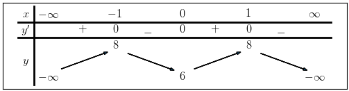
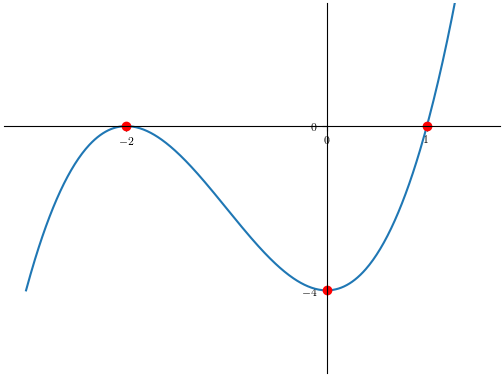

Bước 1:Tập xác định của hàm số
\(D =\mathbb{R}\)
Bước 2:Xét chiều biến thiên của hàm
số
Đạo hàm của hàm số :
\(y'(x) = - 8 x^{3} + 8 x\)
\(\Leftrightarrow y'(x) = 8 x \left(- x^{2}
+ 1\right)\)
Nghiệm của đạo hàm của hàm số:
\(y'(x) = 0\)
\(\Leftrightarrow 8 x \left(- x^{2}
+ 1\right)=0\)
\(\Leftrightarrow x = \begin{cases}-1 \\ 0 \\ 1 \\ \end{cases}\)
Giới hạn của hàm
số:
\(lim_{x\to-\infty}- 2 x^{4} + 4 x^{2} + 6=-\infty\)
\(lim_{x\to\infty}- 2 x^{4} + 4 x^{2}
+ 6=-\infty\)
Bước 3:Vẽ bảng biến thiên

Bước 4:Cực
trị của hàm số
Hàm số đạt cực tiểu tại điểm : \(\left ( 0, \quad 6\right )\)
Hàm số đạt cực đại
tại điểm : \(\begin{cases}\left ( -1, \quad 8\right ) \\ \left ( 1, \quad 8\right ) \\ \end{cases}\)
Bước 5:Đồ
thị của hàm số
